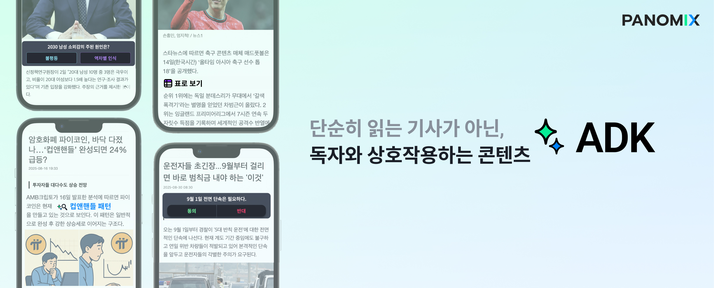
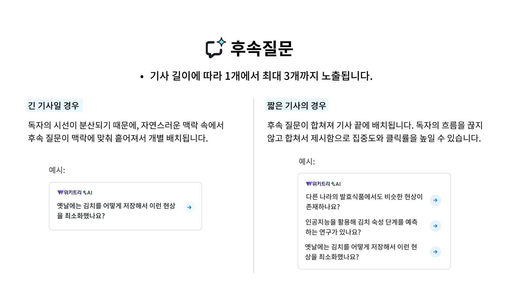
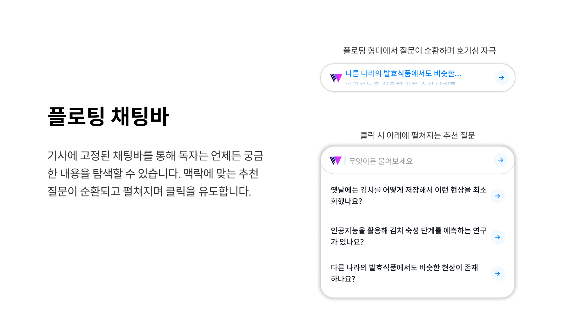
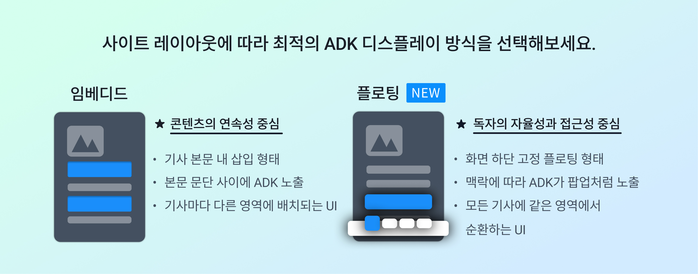
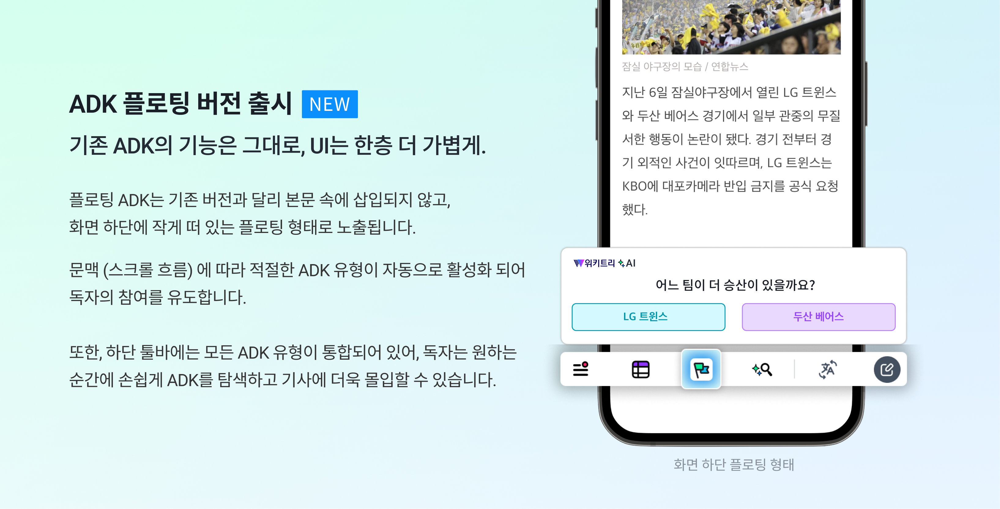
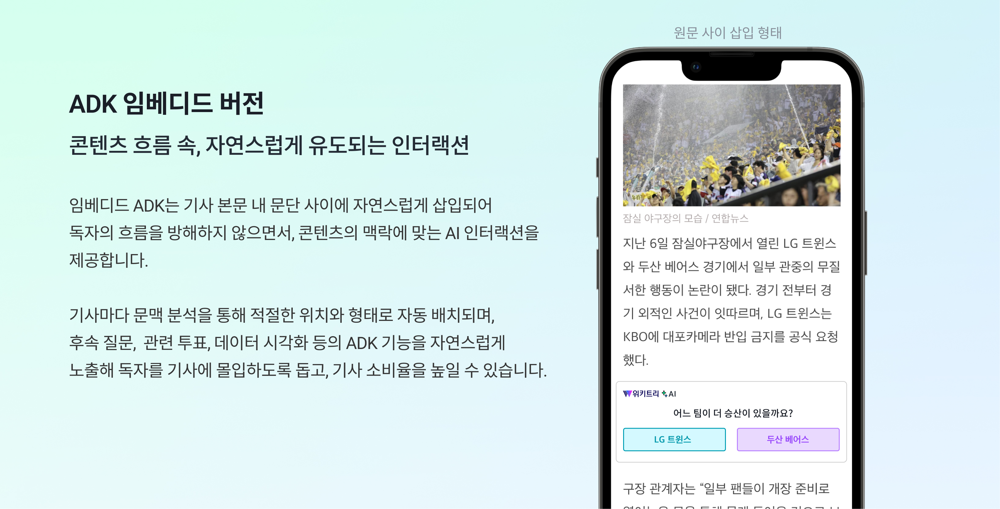

ADK: 기존 콘텐츠에 자연스럽게 녹아드는, 몰입형 AI 경험

ADK는 매체의 기존 콘텐츠 구조를 변경하지 않고, 간단한 연동만으로 독자에게 스마트한 AI 경험을 제공하는 인터랙션 레이어입니다. 기사 관련하여 추가 정보를 제공하거나, 사회적 반응을 탐색하며, 풍부한 형태의 콘텐츠 경험을 통해 독자의 몰입도를 높이고 체류 시간을 효과적으로 증가시킵니다.
현재 무료 베타테스터 모집 중 👉 무료 베타테스터 신청하기
ADK는 이런 기업/단체를 위해 설계되었습니다.
- 기존 콘텐츠 흐름이나 브랜딩을 해치지 않고, 자연스럽게 AI 도입을 하고 싶은 브랜드
- 자체 AI 프로덕트를 개발하고 싶지만 내부 리소스가 부족한 중소 매체사
- AI 기술 도입에 대한 리스크나 비용 부담을 느끼는 기업
- 신규 AI 프로덕트로의 트래픽 확장보다는 기존 콘텐츠의 체류시간 증가와 이탈 방지에 더 무게를 두는 기업
일방향적 정보 전달에 한계를 느끼고, 콘텐츠 이탈률과 체류시간 감소라는 과제를 안고 있는 기업들과 서비스 운영자들이 늘고 있습니다. 이러한 문제를 직면한 기업들을 위한 ADK는 콘텐츠의 흐름을 해치지 않으면서도 사용자 경험을 확장하고, 몰입과 인터랙션을 유도하여 체류시간 증가, 이탈률 감소와 같은 실질적 비즈니스 지표를 개선할 수 있도록 설계된 AI 솔루션입니다.
ADK Features 기능 소개
후속 질문
- 독자가 기사를 읽는 중 생길 수 있는 궁금증을 Q&A 형태로 제공
- *기사 마다 1~3개의 후속질문이 생성되며, 길이에 따라 디스플레이 방식이 정해집니다.

요약 정리
- 긴 기사나 리포트 내용을 간결하게 제공
표로 보기
- 숫자, 데이터, 순위, 비교 정보 등 텍스트만으로는 즉각적인 이해가 어려운 내용을 표 형태로 시각화
스마트 태깅
- 본문에서 핵심 키워드, 또는 난해한 개념의 키워드 태깅 후 정의 및 배경 정보 제공
투표하기
- 콘텐츠 본문과 연결된 양자택일 주제로, 독자들의 직접적인 참여로 투표 현황 및 추가 배경 정보 제공
- 예: 동의 vs. 반대, A or B 형태
플로팅 채팅 바
- 플로팅 형태로, 기사를 읽으면서 독자가 궁금한 점을 검색할 수 있는 채팅 옵션
- 채팅 바에는 추천질문이 순환하며 보여지고, 클릭시 추천 질문이 아래로 펼쳐지는 형태

ADK 디스플레이 버젼 소개

- 플로팅: 새롭게 선보인 플로팅 버젼은 ADK를 화면 하단에 툴 바 형태로 고정하여, 팝업의 형태와 함께 독자의 자율성과 프로덕트에 대한 접근성을 높이는 형태입니다.

- 임베디드: 기사 본문 안에 자연스럽게 녹아들어 콘텐츠의 연속성을 유지하는 형태입니다.

두 버전 모두 독자 UX를 중심으로 설계되었으며, 사이트 환경과 독자 특성에 맞게 유연하게 선택하여 적용할 수 있습니다. *클라이언트 웹사이트 환경 및 톤앤매너에 맞춘 커스텀 UI 디자인 (컬러, 폰트, 매체 로고 추가 등)도 가능합니다. (사전 협의 및 별도 비용이 발생할 수 있습니다.)
Demo (임베디드 버젼): 기사 속 몰입형 AI 경험, 지금 무료로 만나보세요!
Expected Outcome 예상 효과 및 베네핏
파노믹스의 또 다른 프로덕트인 뉴스챗은 ADK와 유사한 사용자 흐름을 기반으로 설계된 솔루션입니다. 올해 1월 출시된 뉴스챗은 체류시간 (뉴스챗 유저 한정)을 ~250% 증가시키는데에 기여할 수 있었습니다. ADK 또한 동일한 플로우와 구조를 기반으로 하기 때문에, 유사한 효과를 기대할 수 있습니다. AI와의 인터랙션을 통해 사용자의 콘텐츠 몰입도가 높아지고 페이지 체류시간이 자연스럽게 증가하며, 독자들은 단순 소비에서 탐색 중심의 소비로 전환되어 이탈률 또한 효과적으로 줄일 수 있습니다.
⏳ 체류시간 150~ 200% 증가
- 기사 본문에서 이탈없는 AI 인터랙션으로 체류시간 대폭 증가 예상
💴 전체 PV당 수익 30% 증가
- 체류시간 증가에 따른 전체 PV당 수익 증가 예상
⚙️ 개발 리소스 불필요, 업무 자동화
- 기사 콘텐츠를 파악하고 문맥에 맞는 ADK 자동생성 및 자동배치 가능
- 도입은 스크립트 한줄로 적용 가능하며, 매체사에서 운영 중인 콘텐츠 환경 그대로 유지 가능
🎯 브랜딩 강화
- AI 기술을 선도적으로 도입함으로서 독자에게 ‘앞서가는 미디어'라는 신뢰감, 광고주에게는 ‘차별화된 파트너십 가치’ 전달
↩️ 후속 콘텐츠 아이디어 생성
- ADK로 수집하는 데이터 (예: 투표 결과, 클릭 수 등) 기반으로 후속 기사 작성 가능
🎨 UI/UX
- 이탈 없는 구조 덕분에 페이지 체류 시간과 유저 리텐션 함께 상승
- 독자의 추가 정보 탐색 니즈를 충족 시키며, 추가 검색을 하기 위해 이탈해야했던 UX 번거로움 해소
- 익숙한 콘텐츠 흐름 안에서 부드럽게 AI 기능을 경험하게 되어 새로운 서비스에 대한 거부감을 덜어줌
문의하기
파노믹스와의 협업을 원하신다면, 간단한 정보를 남겨주세요.
👉 무료 베타테스터 신청하기 또는 info@panomix.io로 메일 주세요.